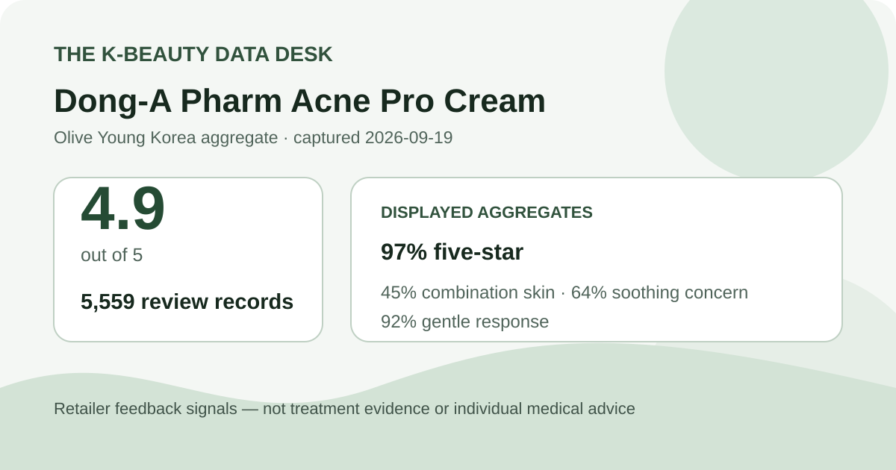
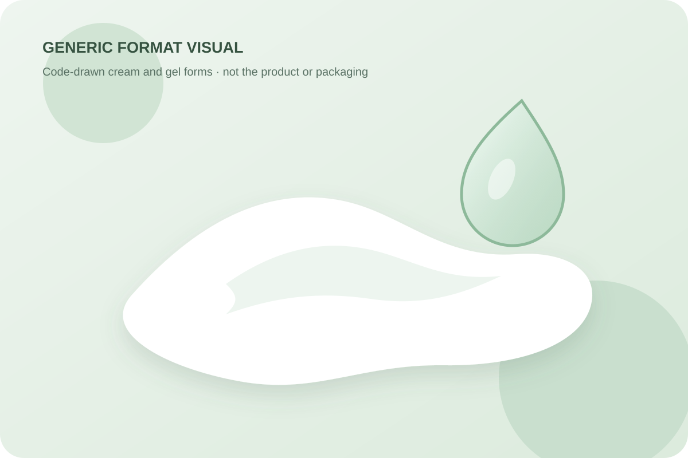

Aggregate data captured September 19, 2026. This article uses only the product title, pack, price, rating, rating distribution, displayed surveys, and anonymous summary themes shown on Olive Young Korea. It does not reproduce or translate an individual review, reviewer name, or user photo. It is shopping-data analysis, not medical advice.

The short version: the listing averaged 4.9 stars across 5,559 review records. Five-star ratings accounted for 97% of the displayed distribution. Combination skin was the largest skin-type response at 45%, soothing led the concern poll at 64%, and 92% selected the gentle response.
The average displayed rating was 4.9 out of 5. The detail panel showed 97% five-star, 2% four-star, 1% three-star, 0% two-star, and 0% one-star. The displayed shares add to 100%. They show a heavily top-weighted rating pattern within this retailer's linked feedback pool.
That pattern is useful for describing storefront sentiment, but the rating system is not a controlled medical study. A star does not identify the user's diagnosis, baseline, concurrent routine, adherence, duration, formulation selected, severity, or objective change. The source does not independently verify every buyer's identity, and linked feedback may cover materially identical configurations with different bundles or packaging.
The high five-star share also does not reveal whether shoppers scored packaging, delivery, price, texture, convenience, or perceived skin change. It cannot establish how many people had no response, stopped early, experienced a delayed reaction, or used another product at the same time. The defensible conclusion is that the captured retail feedback was strongly favorable—not that the product delivered a particular treatment result.
The captured skin-type poll displayed 45% combination, 33% dry, and 22% oily. All displayed shares add to 100%. Combination-skin respondents formed the largest group, but the poll is a sample-composition signal rather than a recommendation for combination skin.
The retailer did not display a separate poll denominator, and the labels are self-selected. The 45% figure is not the share of combination-skin users who improved. It does not compare response, safety, or adherence among skin types. Season, climate, other products, sensitivity, lesion type, underlying condition, and how respondents interpreted the labels were not controlled.
The concern poll showed 64% soothing, 34% hydration, and 2% wrinkle or brightening. These values add to 100%. Soothing was the most represented concern label, which helps explain why the item appears in this shopping context. It does not show that 64% experienced reduced redness, inflammation, discomfort, lesions, or recovery time.
The retailer's anonymous automated summary classified 92% of recent feedback as positive and grouped discussion around calming impressions, a fresh or quickly absorbed feel, and mild-feeling use. Those are broad synthesized themes, not quotations, exact prevalence estimates, or medically verified outcomes. Automated grouping can merge contexts, miss minority experiences, and compress qualifications.
Words such as “calming” or “mild” are especially easy to overread when a product name points toward a skin concern. Here they remain perception themes inside self-selected retail feedback. This article does not turn them into evidence that the product prevents, cures, or treats acne or any other condition.
The irritation poll displayed 92% gentle, 7% ordinary, and 1% felt irritation. A strong majority selected the gentle label. That is useful descriptive context, but it is not an adverse-event rate, allergy test, dermatologist assessment, interaction screen, or guarantee of tolerance.
The poll denominator was not shown separately. A 1% “felt irritation” share should not be treated as a measured risk probability. Reactions can vary with allergy history, barrier condition, amount, frequency, other topical products, prescription treatments, and whether a user is applying to intact or compromised skin. A majority label cannot override product warnings.

The Korean listing title described a 30 ml cream set with smaller cream and gel units. That identifies the offered formats, not their exact viscosity, spread, absorption speed, finish, scent, residue, pilling behavior, active composition, or appropriate application method. I did not open, apply, smell, spread, or wear any part of the set.
The local visual is deliberately brand-neutral and code-drawn. It illustrates generic cream and gel shapes without copying the retailer's packaging, official product photographs, or shopper images. Its appearance is not evidence about the real contents. Follow the current label rather than a general texture assumption, especially if the cream and gel have different directions or purposes.
At capture, the listing displayed ₩35,000. The title described a 30 ml cream with 3 ml cream and 3 ml gel additions. The page did not show a separate sale price in the captured header. The additions should not be assumed permanent, and the title alone does not establish whether every option has identical contents.
Price, stock, seller, gifts, pack, regulatory presentation, and checkout terms can change. Compare the exact selected option, expiry information, storage, sealed packaging, return terms, and current official label. Do not let ranking position or extra units substitute for checking whether the product is appropriate for the intended use.
This capture did not independently preserve and reconcile a complete current ingredient list, warnings, or directions. It therefore does not support any statement about active ingredients, concentrations, antibiotic content, exfoliating agents, fragrance, alcohol, pregnancy suitability, interaction risk, comedogenicity, or use alongside prescriptions. No concentration is inferred from the product name or retail category.
No. It means the captured retailer feedback averaged 4.9 stars. The interface did not provide a controlled comparison, standardized diagnosis, objective lesion count, treatment protocol, or follow-up period.
Combination skin was the largest displayed poll group at 45%. That describes who was represented; it does not establish better results or lower risk for that group.
No. Soothing was the leading concern label, not a measured outcome. It cannot be converted into a response rate for redness, inflammation, pain, or acne lesions.
The gentle response led at 92%, while 1% selected felt irritation. Those shopper labels do not establish safety, allergy compatibility, or suitability for a diagnosed condition. Check the label and seek individualized guidance when needed.
This article intentionally does not provide a regimen. The cream and gel may have different current directions, and the captured aggregate does not establish dose or order. Follow the exact package and official guidance.
Dong-A Pharm Acne Pro Cream had a strong captured storefront profile: 4.9 stars from 5,559 linked review records, with 97% of the displayed distribution at five stars. Combination skin led the skin-type poll, soothing led the concern poll, and gentle was the dominant irritation response.
That is enough to describe a popular, favorably rated retail listing. It is not enough to diagnose acne, promise treatment, prescribe use, or predict safety. Keep the shopping signal separate from medical decision-making, and verify the current label, contents, status, warnings, directions, and professional guidance before use.
Source: Aggregate retail data captured September 19, 2026. Open the dated Olive Young Korea product page. Product title, pack, price, rating, distribution, polls, and summary display can change.
← Back to all analyses · Review-volume ranking · Skin-type poll view